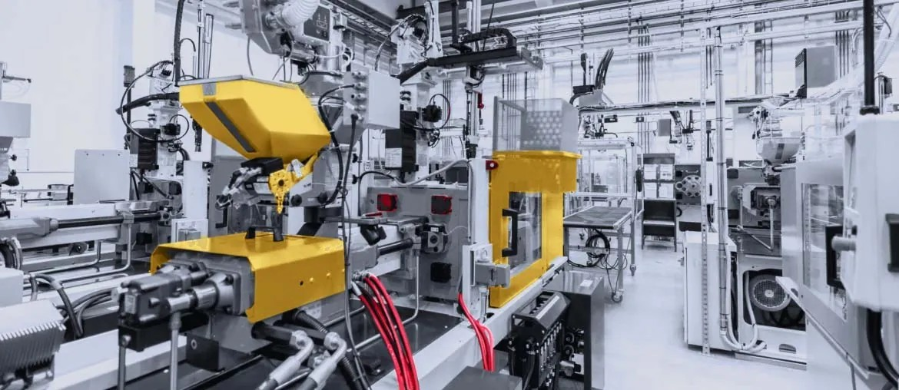

Three contractor roles across AIT, harness, and thermal engineering.
Prepared for Robert Goddard • SSTL
April 16, 2026
A software squad for SSTL's growing mission build load
The biggest software win looks internal, not cosmetic. We would help tighten the digital flow around mission build, supplier handoff, test evidence, and customer-facing tools like Lunar Pathfinder Mission Builder.
We saw contractor hiring across harness design, AIT integration, and thermal engineering while SSTL lists several missions in build. That usually means delivery pressure is rising across more than one team.
Lunar Pathfinder Mission Builder is the main visible software surface.
JUNO, SatelliteVu, MicroSAR, and Lunar Pathfinder are listed in build.
Our read
These contractor roles point to a real delivery spike. SSTL already has JUNO, SatelliteVu, MicroSAR, and Lunar Pathfinder in build. The Harness Design role also points to outsourced harness work on selected missions. That mix often creates split data across design, build, test, and suppliers. If the flow stays manual, late issues surface in AIT. Senior engineers get dragged into chase work. Schedule margin gets thinner.
What we'd do
We would place a dedicated software squad under your engineering leads for an eight-week pilot.
Map the real handoffs
Map AIT, harness, thermal, and supplier handoffs on one live flow. Remove spreadsheet gaps before they become late build surprises.
Build one current record
Build a secure workspace for design changes, NCRs, approvals, and readiness status. Give Guildford teams one current record.
Surface blockers early
Add automated checks and clear dashboards for test evidence, blocked tasks, and release risk. Surface issues before peak workload.
Tighten the public tool
Tighten Lunar Pathfinder Mission Builder and contact routing. Improve speed, accessibility, and the handoff into engineering review.
Who is Elinext
Elinext is a full-cycle software development company, active since 1997. We work with about 700 in-house specialists, with no freelancers or subcontractors. For engineering-heavy products, we bring .NET, Python, React, Angular, QA, and DevOps in one team. Our work for Siemens, TRUMPF, and Volkswagen shows we can support complex industrial environments. We also work under ISO 9001 and ISO 27001, which matters when delivery data is sensitive. That is why the squad above can fit into SSTL fast and stay disciplined from day one.
Siemens
TRUMPF
Volkswagen
Proof
Two projects that sit close to complex hardware, manufacturing, and live operational data.

Manufacturing • Web Application
Manufacturing Execution System
A legacy MES was hard to integrate with newer software. Result: ROI reached up to 400%, with round-the-clock support across end-client environments.
View case study
Manufacturing • Web and DevOps
Real-time Data Insights of Machines Performance
A manufacturer needed live machine data and clear improvement insights. Result: the platform connected production data and helped cut extra production costs.
View case studyTalk through the load
We can map the first high-friction workflow together.
Start the conversation